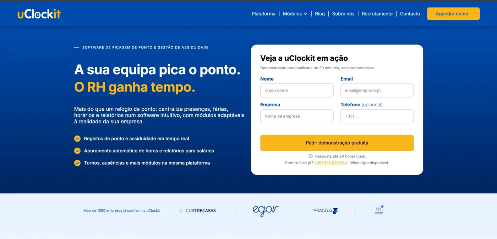

Front-End Developer, uClockit
I moved uclockit.pt off SimplySite and rebuilt it in Webflow, page by page: the blog on Webflow CMS, the DNS and domain switch, SEO, cookie consent and Google Ads. I also built the monthly newsletter in table-based HTML, tested it in Outlook, Gmail and dark mode, and set up Pipedrive automations so it goes out on its own.
Webflow, DNS, HTML email, Pipedrive, SEO, Google Ads
Visit uclockit.pt